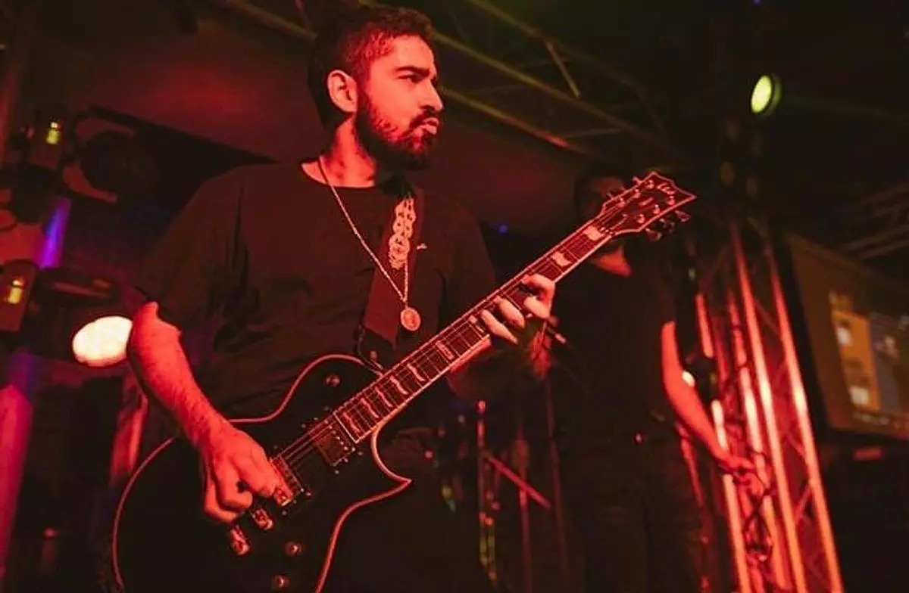

Mürsel Oğulcan Ava, 1989 tarihinde Çanakkale'de dünyaya geldi. Müzikle tanışmasıyla birlikte hayatının büyük bir kısmını bu tutkuya adamış bir gitarist ve back vokalisttir. Mürsel Oğulcan Ava, müzikle ilk tanışmasıyla birlikte büyük bir tutkuya dönüşen gitar çalmaya genç yaşta başladı. Yeteneği ve tutkusu, onu kısa sürede yerel sahnelerde tanınan bir isim haline getirdi. Eğitimine hocaları sayesinde başlayan Ava, müzik alanında kendini geliştirmek için Müzik Vakfı gibi önemli bir kurumda eğitim aldı. Burada gitar çalma tekniklerini mükemmelleştirdi ve aynı zamanda vokal yeteneğini geliştirmeye başladı. Profesyonel müzik kariyerine adım atan Ava, Polonya’nın Başı Belada (2014) ile büyük bir çıkış yakaladı. Bu başarı, onun müzik dünyasında tanınan bir isim olmasını sağladı. Mürsel Oğulcan Ava, birçok müzik grubunda ve projede yer aldı. Hem gitar çalma becerisiyle hem de güçlü back vokaliyle sahnede ve stüdyoda önemli bir rol oynadı. Şu anda Ava, müzik kariyerine Dolu Kadehi Ters Tut grubunun gitaristi ve back vokali olarak devam etmektedir. Gelecekteki hedefleri arasında Mürsel Oğulcan Ava, yetenekli bir gitarist ve back vokalist olarak müzik dünyasında önemli bir iz bırakan bir sanatçıdır.
